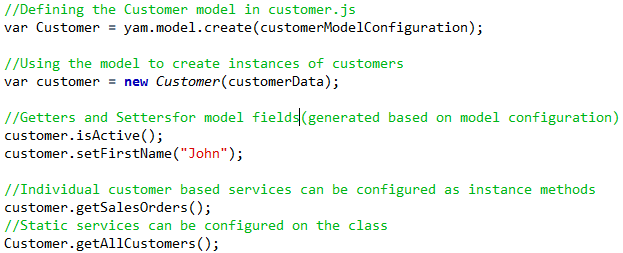

Introduction
There are a number of JavaScript frameworks that eases the task of UI development. However, most of these frameworks have functionalities revolving around the creation of views, wiring views together with event handling and binding these views with data. While the multitude of features supported by these frameworks are sufficient for development of websites, when it comes to single page enterprise applications, the data itself is the most important entity.
Suppose your application has a customers table in the DB. A convenient way of connecting to this DB, in the backend application layer, would be to use a persistence provider like Hibernate and map the entire DB structure as entity classes. Services related to a customer, like retrieving sales orders of the customer, can be implemented as a service class that accepts a customer model instance as its input. YAMF helps a frontend engineer achieve the same structure in JavaScript.
YAMF aims at providing a framework to define data entities, like customers, as JavaScript classes along with their related services. Customer can be registered as a model, which will provide a Customer class that can be used to create instances of customers. Services related to a single customer can be registered as functions on the prototype of this class. Functions that are more suited for the customer class as a whole rather than an individual customer, like fetching all active customers, can be defined as static methods available directly on the Customer class.
Model
Model is the representation of a functional entity in the application, like Customers. YAMF models help the user to represent the data entity along with all its related functionality as a JavaScript class.
Usecase
There is a Customer table in the backend with the following fields
- ID - Number
- First Name - Text
- Last Name - Text
- Domains - Multiple value field, whose data is available in CSV format
In this tutorial we try to represent this Customer table as a class in frontend. The input to be passed during creation of the instance is assumed to be a JSON object with the fields - id, firstname, lastname and domains. The following features are expected for the Customer class:
- Getters and setters for every field, like
getCustomerId,setDomainsetc - The CSV data in
domainsshould be available as an array in when accessed via its getter - A virtual field
fullNamethat concatenates the first and last names - Getters and setters should be available for this field
- Any change to first or last name should be reflected while retrieving
fullName - Any attempt to set full name should make appropriate changes in first and last name
- It should be possible to retrieve the current state of the instance in the same format in which the input was provided
- When data is retrieved, the field
domainsshould have its value in CSV format
In the following sections, we'll try to achieve this functionality using YAMF